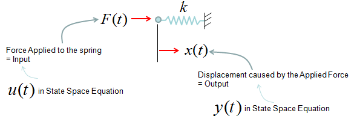
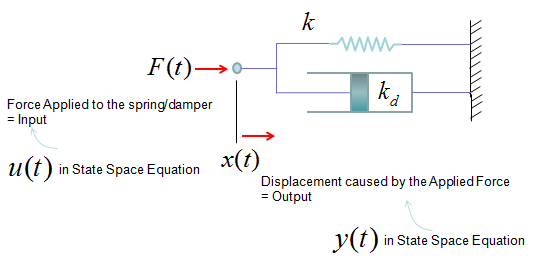
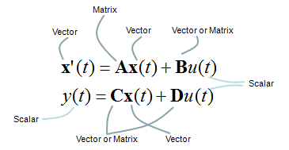
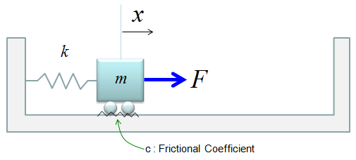
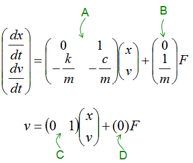
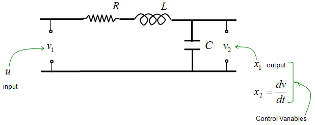

DE - State Space Modeling Home : www.sharetechnote.com
State Space Modeling is also a kind of way to convert a differential equation into a set of matrix equation. But the way we did in previous section (Differential Equation meeting Matrix) was mainly for mathematical manipulation. It was not easy to extract any practical meaning out of the matrix. However, State Space Modeling is a method to convert a/a set of differential equation(s) into a form of matrix equation from which we can extract physical/practical meaning of a system.
The logic behind the State Space Modeling is as follows.
For most of differential equations (especially those equations for engineering system), there would be terms that can be interpreted as an input to a system and terms that can be interpreted as output of the system.
For example, if you have a system with an input function labeled as u(t) and output function labeled as y(t) as shown below.

You may be able to mode this system in a differential equation as shown below.

Giving you more practical examples, the very common spring system and spring-damper systems can also be described as single input and single output system and can be described in a form of differential equation shown above. (Actually you can interprete all the examples in Modeling Building Block section into an input/output relations)


You can also think of a system with multiple inputs and multiple outputs as shown below.

Regardless of how many inputs and outputs you have, there is a certain form of differential equation (linear differential equation) that can be converted into a set of Matrix equation as shown below. The special matrix form as shown below is called 'State Space Model'.
The state space mode for a single input and single output can be modeled as shown below.

The state space mode for multiple inputs and multiple outputs can be modeled as shown below. Can you notice what is the difference between this equation and previous equation ? In single input/single output equation, you would notice that y(t) is a single function whereas in multiple input/single output equation y(t) is a vector (a set of functions). Similarly you would notice that u(t) is a single functionin single input/single output equation whereas y(t) is a vector (a set of functions) in mutiple input/single output equation.

One thing you have to be very careful about the state space modeling is the dimension of A, B, C, D matrix/vector which is described as shown below.

How to figure out A,B,C,D matrix/vector out of a differential equation or a set of differential equations ? I will put down several samples from the simplest ones to complicated ones later when I have time. For now, just refer to <Example : 2nd Order Non-Homogeneous Lineare Differential Equation - System with Single External Input > as an example. You can easily get A, B from the process explained in Converting High Order Differential Equation into First Order Simultaneous Differential Equation, but you may put some thought and effort to figure out C and D (especially C).
Why we want to convert a or a set of differential equations into this form (State Space Model) ?
It is because
- There are many analysis methods developed for this form
- Many of the computer software requires this form as the description of the system (implying that this form is very useful to solve a differential equations with computer in numerical method).
< State Space Model Example : Simple Spring-Mass >
Let's look into a simple example as shown below. It is a spring-mass system with friction. You can think of the friction as a damping.

Now you can derive the two first order differential equations as shown below. (I will not show you each and every steps of how to draw these equations. I just assume that you became familiar enough to draw differetial equations for such a simple system like this).

If we determine the input, state variables and output as shown below, (these are the ones YOU determine. Depending on how you determine these variables, the state space matrix varies. When you first read text about state space modeling, you may ask "Why they picked as the control variables ?", "Why they picked this as the input and that as the output ?". Basically it is totally upto the textbook writer. Theoretically you can determine those variables in any way you like as long as you can define proper differential equations using those variables).

The first matrix equation with A, B matrix is just direct conversion of the set of differential equations into matrix form, so there should be no ambiquity about it. But the second matrix equation with C, D matrix may not look straightforward. Actually the second matrix with C, D matrix become a little different depending on which variable you want to get as the output of the system. If you want to take v as the output, it become as follows.

If you want to take x as the output, it become as follows.

Once you build up this kind of state space model, you can get the solution of these system with various software package. (See Damped Spring-mass example in Matlab/Octave differential equation page)
< State Space Model Example : RLC Circuit >
Let's take a RLC circuit as another example as shown below.

If we determine the input, state variables and output as shown below, (these are the ones YOU determine. Depending on how you determine these variables, the state space matrix varies. When you first read text about state space modeling, you may ask "Why they picked as the control variables ?", "Why they picked this as the input and that as the output ?". Basically it is totally upto the textbook writer. Theoretically you can determine those variables in any way you like as long as you can define proper differential equations using those variables).
these

The state space model become as shown below. (I will leave it to you to derive this equation or just use this equation -:)

If you are interested in the solution of this equation, see State Space Model - RLC in Matlab/Octave Differential Equation page.